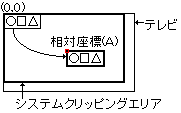

★
HARDWARE Manual
★
VDP1ユーザーズマニュアル
★
第７章 コマンド
▲
戻る
｜
進む
▼
VDP1ユーザーズマニュアル/第７章 コマンド
■7.3 相対座標設定コマンド
相対座標設定コマンドは、描画コマンドで指定する座標を相対座標値とし、相対座標コマンドで指定した値を加算して描画座標とします。
コマンド選択ビットが1010Bのとき相対座標設定コマンドです。
コマンドテーブルの内容は次のとおりです。
ビット
15
14
13
12
11
10
９
８
７
６
５
４
３
２
１
０
CMDCTRL
+00
0
JP
0
0
0
0
0
0
0
0
1
0
1
0
CMDLINK
+02
LINK指定/8H
0
0
+04
+06
+08
+0A
CMDXA
+0C
符号拡張
相対座標(XA)
CMDYA
+0E
符号拡張
相対座標(YA)
+10
+12
+14
+16
+18
+1A
+1C

【注】
は無視されます(don't care)
相対座標設定コマンドは次のように定義します。
エンドビットを0Bに、コマンド選択ビットを1010Bに設定すると、相対座標設定コマンドになります。
ジャンプ形式を指定します。ジャンプ形式がアサインまたはコールのとき、次に処理するコマンドテーブルのアドレスを8Hで割ってCMDLINKに設定します。
相対座標をCMDXA, CMDYAに定義します。
●相対座標
相対座標レジスタに相対座標を設定します。描画コマンドで指定された座標は相対座標の値が加算されて描画座標となります。パーツは描画座標を基にしてフレームバッファに描画されます。
相対座標が(0,0)のとき、パーツは画面の左上角を(0,0)として描画コマンドで指定した座標で描画されます。画面のほぼ中央を(0,0)にするときは相対座標を(160,112)と指定します。
相対座標は再設定するまでレジスタに保持されるので、いくつかのパーツの座標をまとめて移動させて描画したいとき、それらの描画コマンドの前に設定します。
クリッピングにおける座標比較は、パーツの描画指定座標にこの相対座標を加えた値で処理されます。
また、クリッピング座標には相対座標が加算されないので、クリッピングのエリアが移動してしまうことはありません。
相対座標レジスタは、電源投入後またはリセット後は値が不定になりますので、描画開始前にかならず設定してください。
▲
戻る
｜
進む
▼
★
HARDWARE Manual
★
VDP1ユーザーズマニュアル
★
第７章 コマンド
Copyright SEGA ENTERPRISES, LTD., 1997
 ★HARDWARE Manual
★VDP1ユーザーズマニュアル
★第７章 コマンド
★HARDWARE Manual
★VDP1ユーザーズマニュアル
★第７章 コマンド
★HARDWARE Manual
★VDP1ユーザーズマニュアル
★第７章 コマンド
★HARDWARE Manual
★VDP1ユーザーズマニュアル
★第７章 コマンド